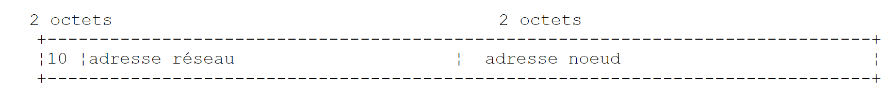
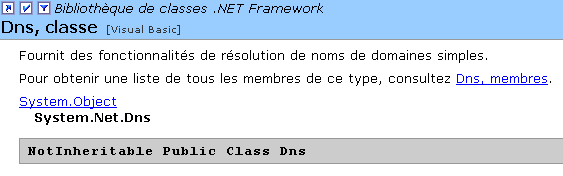
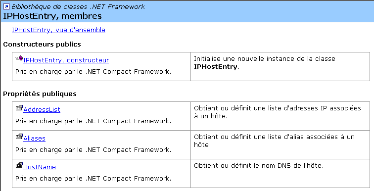
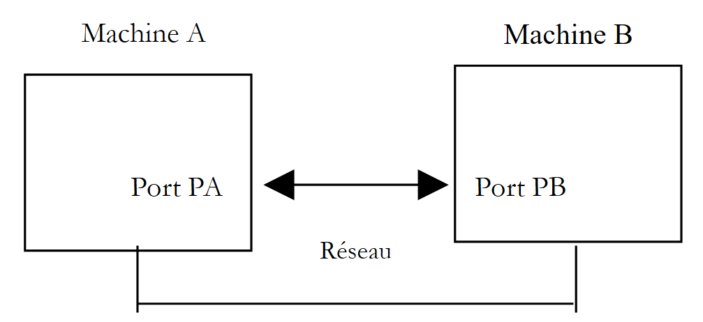
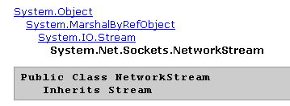
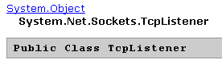

9. Programming TCP-IP
9.1. General Information
9.1.1. Internet Protocols
Here we provide an introduction to Internet communication protocols, also known as the TCP/IP suite (Transfer Control Protocol / Internet Protocol), named after the two main protocols. It is advisable for the reader to have a general understanding of how networks work, particularly the TCP/IP protocols, before tackling the development of distributed applications.
The following text is a partial translation of a passage found in the document "Lan Workplace for Dos - Administrator's Guide" by NOVELL, a document from the early 1990s.
The general concept of creating a network of heterogeneous computers stems from research conducted by the DARPA (Defense Advanced Research Projects Agency) in the United States. The DARPA developed the suite of protocols known as TCP/IP, which allows heterogeneous machines to communicate with one another. These protocols were tested on a network called ARPAnet, which later became the INTERNET network. The TCP/IP protocols define formats and rules for transmission and reception that are independent of the network architecture and the hardware used.
The network designed by DARPA and managed by the TCP/IP protocols is a packet-switched network. Such a network transmits information over the network in small pieces called packets. Thus, if a computer transmits a large file, it will be broken down into small pieces that are sent over the network to be reassembled at the destination. TCP/IP defines the format of these packets, namely:
- packet source
- destination
- length
- type
9.1.2. The OSI format
The TCP/IP protocols broadly follow the open network model known as OSI (Open Systems Interconnection Reference Model) defined by the ISO (International Standards Organisation). This model describes an ideal network where communication between machines can be represented by a seven-layer model:
 |
Each layer receives services from the lower layer and provides its own to the upper layer. Suppose two applications located on different machines A and B want to communicate: they do so at the Application layer. They do not need to know all the details of how the network operates: each application passes the information it wishes to transmit to the layer below it: the Presentation layer. The application therefore only needs to know the rules for interfacing with the Presentation layer.
Once the information is in the Presentation layer, it is passed according to other rules to the Session layer and so on, until the information reaches the physical medium and is physically transmitted to the destination machine. There, it will undergo the reverse process of what it underwent on the sending machine.
At each layer, the sender process responsible for sending the information sends it to a receiver process on the other machine belonging to the same layer as itself. It does so according to certain rules known as the layer protocol. We therefore have the following final communication diagram:
 |
The roles of the different layers are as follows:
Ensures the transmission of bits over a physical medium. This layer includes data processing terminal equipment (E.T.T.D.) such as terminals or computers, as well as data circuit termination equipment (E.T.C.D.) such as modulators/demodulators, multiplexers, and concentrators. Key points at this level are: . the choice of information encoding (analog or digital) . the choice of transmission mode (synchronous or asynchronous). | |
Hides the physical characteristics of the Physical Layer. Detects and corrects transmission errors. | |
Manages the path that information sent over the network must follow. This is called routing: determining the route that information must take to reach its destination. | |
Enables communication between two applications, whereas the previous layers only allowed communication between machines. A service provided by this layer can be multiplexing: the transport layer can use a single network connection (from machine to machine) to transmit data belonging to multiple applications. | |
This layer provides services that allow an application to open and maintain a working session on a remote machine. | |
It aims to standardize the representation of data across different machines. Thus, data originating from machine A will be "formatted" by machine A’s Presentation layer according to a standard format before being sent over the network. Upon reaching the Presentation layer of the destination machine B, which will recognize them thanks to their standard format, they will be formatted differently so that the application on machine B can recognize them. | |
At this level, we find applications that are generally close to the user, such as email or file transfer. |
9.1.3. The TCP/IP model
The OSI model is an ideal model that has never yet been implemented. The TCP/IP protocol suite comes close to it in the following form:
 |
Physical Layer
In local area networks, Ethernet or Token-Ring technology is generally used. We will only discuss Ethernet technology here.
Ethernet
This is the name given to a packet-switched local area network technology invented at Xerox in the early 1970s and standardized by Xerox, Intel, and Digital Equipment in 1978. The network physically consists of a coaxial cable approximately 1.27 cm in diameter and up to 500 m in length. It can be extended using repeaters, with no more than two repeaters separating any two devices. The cable is passive: all active components are located on the machines connected to the cable. Each machine is connected to the cable via a network interface card comprising:
- a transceiver that detects the presence of signals on the cable and converts analog signals to digital signals and vice versa.
- a coupler that receives digital signals from the transceiver and transmits them to the computer for processing, or vice versa.
The main features of Ethernet technology are as follows:
- Capacity of 10 megabits per second.
- Bus topology: all machines are connected to the same cable
 |
- Broadcast network—A transmitting machine sends information over the cable with the address of the receiving machine. All connected machines then receive this information, and only the intended recipient retains it.
- The access method works as follows: the transmitter wishing to transmit listens to the cable—it then detects whether or not a carrier wave is present, the presence of which would indicate that a transmission is in progress. This is the Carrier Sense Multiple Access (CSMA) technique. If no carrier is present, a transmitter may decide to transmit in turn. Several transmitters may make this decision. The transmitted signals overlap: this is called a collision. The transmitter detects this situation: while transmitting over the cable, it also listens to what is actually passing through it. If it detects that the information traveling over the cable is not the one it transmitted, it concludes that a collision has occurred and will stop transmitting. The other transmitters that were transmitting will do the same. Each will resume transmission after a random delay depending on the individual transmitter. This technique is called CD (Collision Detect). The access method is thus called CSMA/CD.
- 48-bit addressing. Each machine has an address, referred to here as the physical address, which is written on the card connecting it to the cable. This address is called the machine’s Ethernet address.
Network Layer
At this layer, we find the protocols IP, ICMP, ARP, and RARP.
Delivers packets between two network nodes | |
ICMP facilitates communication between the IP protocol program on one machine and that on another machine. It is therefore a message exchange protocol within the IP protocol itself. | |
maps a machine's Internet address to its physical address | |
maps a machine's physical address to its Internet address |
Transport/Session Layers
This layer includes the following protocols:
Ensures reliable delivery of information between two clients | |
Ensures unreliable delivery of information between two clients |
Application/Presentation/Session Layers
Various protocols are found here:
Terminal emulator allowing machine A to connect to machine B as a terminal | |
Enables file transfers | |
enables file transfers | |
enables the exchange of messages between network users | |
converts a machine name into the machine's Internet address | |
Created by Sun MicroSystems, it specifies a standard, machine-independent representation of data | |
Also defined by Sun, this is a communication protocol between remote applications, independent of the transport layer. This protocol is important: it relieves the programmer of the need to know the details of the transport layer and makes applications portable. This protocol is based on the XDR protocol | |
Also defined by Sun, this protocol allows one machine to "see" the file system of another machine. It is based on the previous RPC protocol |
9.1.4. How Internet Protocols Work
Applications developed in the TCP/IP environment generally use several of the protocols in this environment. An application program communicates with the highest layer of the protocols. This layer passes the information to the layer below it, and so on, until it reaches the physical medium. There, the information is physically transferred to the destination machine, where it will pass through the same layers again—this time in reverse—until it reaches the application intended to receive the sent information. The following diagram shows the path of the information:
 |
Let’s take an example: the FTP application, defined at the Application layer, which enables file transfers between machines.
- The application delivers a sequence of bytes to be transmitted to the transport layer.
- The transport layer divides this sequence of bytes into segments TCP and adds the segment number to the beginning of each segment. The segments are passed to the Network layer, which is governed by the IP protocol.
- The IP layer creates a packet encapsulating the received TCP segment. At the beginning of this packet, it places the Internet addresses of the source and destination machines. It also determines the physical address of the destination machine. The entire packet is passed to the Data Link & Physical Layer, that is, to the network card that connects the machine to the physical network.
- There, the IP packet is in turn encapsulated in a physical frame and sent to its recipient over the cable.
- On the destination machine, the Data Link & Physical Layer does the opposite: it decapsulates the IP packet from the physical frame and passes it to the IP layer.
- The IP layer verifies that the packet is valid: it calculates a checksum based on the received bits, which must match the checksum in the packet header. If they do not match, the packet is discarded.
- If the packet is deemed valid, the IP layer decapsulates the TCP segment contained within it and passes it up to the transport layer.
- The transport layer, layer TCP in our example, examines the segment number to restore the correct order of the segments.
- It also calculates a checksum for the TCP segment. If it is found to be correct, the TCP layer sends an acknowledgment to the source machine; otherwise, the TCP segment is rejected.
- All that remains for the TCP layer to do is to transmit the data portion of the segment to the application intended to receive it in the layer above.
9.1.5. Addressing on the Internet
A network node can be a computer, a smart printer, a file server—anything, in fact, that can communicate using the TCP/IP protocols. Each node has a physical address with a format that depends on the type of network. On an Ethernet network, the physical address is encoded over 6 bytes. An address on an X.25 network is a 14-digit number.
A node’s Internet address is a logical address: it is independent of the hardware and network used. It is a 4-byte address that identifies both a local network and a node on that network. The Internet address is usually represented as four numbers—the values of the four bytes—separated by a dot. Thus, the address of the machine Lagaffe at the Faculty of Sciences in Angers is written as 193.49.144.1, and that of the machine Liny as 193.49.144.9. From this, we can deduce that the Internet address of the local network is 193.49.144.0. There can be up to 254 nodes on this network.
Because Internet addresses or IP addresses are independent of the network, a machine on network A can communicate with a machine on network B without concerning itself with the type of network it is on: it simply needs to know its IP address. The IP protocol of each network handles the conversion between IP addresses and physical addresses, in both directions.
All IP addresses must be unique. In France, the INRIA is responsible for assigning IP addresses. In fact, this organization issues an address for your local network, for example 193.49.144.0 for the network of the Faculty of Sciences in Angers. The administrator of this network can then assign the IP addresses 193.49.144.1 through 193.49.144.254 as they see fit. This address is generally recorded in a specific file on each machine connected to the network.
9.1.5.1. The IP address classes
A IP address is a sequence of 4 bytes, often written as I1.I2.I3.I4, which actually contains two addresses:
- the network address
- the address of a node on that network
Depending on the size of these two fields, IP addresses are divided into 3 classes: classes A, B, and C.
Class A
The address IP: I1.I2.I3.I4 has the form R1.N1.N2.N3 where
R1 | is the network address |
N1.N2.N3 | is the address of a machine on that network |
More precisely, the form of a Class A address IP is as follows:
 |
The network address is 7 bits long and the host address is 24 bits long. Therefore, there can be 127 Class A networks, each containing up to 224 hosts.
Class B
Here, the address IP: I1.I2.I3.I4 has the form R1.R2.N1.N2 where
R1.R2 | is the network address |
N1.N2 | is the address of a machine on that network |
More precisely, the format of a Class B address IP is as follows:
 |
The network address is 2 bytes (14 bits exactly), as is the node address. Therefore, there can be 2¹⁴ Class B networks, each containing up to 2¹⁶ nodes.
Class C
In this class, the address IP: I1.I2.I3.I4 has the form R1.R2.R3.N1 where
R1.R2.R3 | is the address of network |
N1 | is the address of a machine on that network |
More precisely, the form of a Class C address IP is as follows:
 |
The network address is 3 bytes (minus 3 bits) and the host address is 1 byte. Therefore, there can be 221 Class C networks, each containing up to 256 hosts.
Since the address of the Lagaffe machine at the Angers Faculty of Sciences is 193.49.144.1, we see that the most significant byte is 193, which is 11000001 in binary. We can deduce that the network is a Class C network.
Reserved Addresses
- Certain addresses, such as IP, are network addresses rather than node addresses within the network. These are the ones where the node address is set to 0. Thus, the address 193.49.144.0 is the network address of the Faculty of Sciences in Angers. Consequently, no node in a network can have the address zero.
- When, in an address such as IP, the node address consists entirely of 1s, we have a broadcast address: this address refers to all nodes on the network.
- In a Class C network, which theoretically allows for 2⁸ = 256 nodes, if we remove the two prohibited addresses, we are left with only 254 authorized addresses.
9.1.5.2. Internet Address <--> Physical Address Conversion Protocols
We have seen that when data is transmitted from one machine to another, as it passes through the IP layer, it is encapsulated in packets. These have the following form:
 |
The IP packet therefore contains the Internet addresses of the source and destination machines. When this packet is transmitted to the layer responsible for sending it over the physical network, additional information is added to form the physical frame that will ultimately be sent over the network. For example, the format of a frame on an Ethernet network is as follows:
 |
The final frame contains the physical addresses of the source and destination machines. How are these addresses obtained?
The sending machine, knowing the address IP of the machine it wants to communicate with, obtains the latter’s physical address using a specific protocol called ARP (Address Resolution Protocol).
- It sends a special type of packet called a ARP packet containing the address IP of the machine whose physical address is being sought. It also includes its own address, IP, as well as its physical address.
- This packet is sent to all nodes on the network.
- These nodes recognize the special nature of the packet. The node that recognizes its address IP in the packet responds by sending its physical address to the packet’s sender. How is it able to do this? It found the sender’s address IP and physical address in the packet.
- The sender therefore receives the physical address it was looking for. It stores it in memory so it can use it later if other packets need to be sent to the same recipient.
A machine’s IP address is normally stored in one of its files, which it can consult to retrieve it. This address can be changed: simply edit the file. The physical address, however, is stored in the network card’s memory and cannot be changed.
When an administrator wishes to reorganize the network, they may need to change the IP addresses of all nodes and thus edit the various configuration files for each node. This can be tedious and prone to errors if there are many machines. One method involves not assigning a IP address to the machines: instead, a special code is entered into the file where the machine would normally find its IP address. Upon discovering that it does not have a IP address, the machine requests it using a protocol called RARP (Reverse Address Resolution Protocol). It then sends a special packet over the network called a RARP packet, analogous to the previous ARP packet, in which it includes its physical address. This packet is sent to all nodes, which then recognize a RARP packet. One of them, called the RARP server, has a file containing the physical address <--> IP address mapping for all nodes. It then responds to the sender of the RARP packet by sending back its IP address. An administrator wishing to reconfigure the network therefore only needs to edit the mapping file on the RARP server. This server should normally have a fixed address, IP, which it should be able to know without having to use the RARP protocol itself.
9.1.6. The network layer, known as the IP layer of the Internet
The IP protocol (Internet Protocol) defines the format that packets must take and how they must be handled during transmission or reception. This particular type of packet is called a IP datagram. We have already introduced it:
 |
The important point is that, in addition to the data to be transmitted, the IP datagram contains the Internet addresses of the source and destination machines. This way, the receiving machine knows who is sending it a message.
Unlike a network frame, whose length is determined by the physical characteristics of the network it traverses, the length of the IP datagram is fixed by the software and will therefore be the same across different physical networks. We have seen that as we move down from the network layer to the physical layer, the datagram IP is encapsulated in a physical frame. We gave the example of the physical frame of an Ethernet network:
 |
Physical frames travel from node to node toward their destination, which may not be on the same physical network as the sending machine. The packet IP can therefore be successively encapsulated in different physical frames at the nodes that connect two networks of different types. It is also possible that the packet IP is too large to be encapsulated in a physical frame. The software IP on the node where this problem occurs then breaks the packet IP into fragments according to specific rules, each of which is then sent over the physical network. They will only be reassembled at their final destination.
9.1.6.1. Routing
Routing is the method of directing IP packets to their destination. There are two methods: direct routing and indirect routing.
Direct routing
Direct routing refers to the transmission of a IP packet directly from the sender to the recipient within the same network:
- The machine sending a IP datagram has the recipient’s address IP.
- It obtains the recipient’s physical address via the ARP protocol or from its tables, if that address has already been obtained.
- It sends the packet over the network to this physical address.
Indirect routing
Indirect routing refers to the transmission of a packet IP to a destination located on a network other than the one to which the sender belongs. In this case, the network address portions of the IP addresses of the source and destination machines are different. The source machine recognizes this. It then sends the packet to a special node called a router, a node that connects a local network to other networks and whose address IP it finds in its tables—an address initially obtained either from a file, from permanent memory, or via information circulating on the network.
A router is connected to two networks and has an address IP within these two networks.
 |
In our example above:
- Network No. 1 has the Internet address 193.49.144.0 and Network No. 2 has the address 193.49.145.0.
- Within network #1, the router has the address 193.49.144.6 and the address 193.49.145.3 within network #2.
The router’s role is to convert the packet IP that it receives—which is contained in a physical frame typical of network #1—into a physical frame that can travel over network #2. If the address IP of the packet’s destination is in network #2, the router will send the packet directly to it; otherwise, it will send it to another router, connecting network #2 to network #3, and so on.
9.1.6.2. Error and Control Messages
Also in the network layer—at the same level as the IP protocol—is the ICMP protocol (Internet Control Message Protocol). It is used to send messages regarding the internal operation of the network: failed nodes, congestion at a router, etc. ICMP messages are encapsulated in IP packets and sent over the network. The IP layers of the various nodes take the appropriate actions based on the ICMP messages they receive. Thus, an application itself never sees these network-specific issues. A node will use the ICMP information to update its routing tables.
9.1.7. The transport layer: the UDP and TCP protocols
9.1.7.1. The UDP protocol: User Datagram Protocol
The UDP protocol allows for unreliable data exchange between two points, meaning that the successful delivery of a packet to its destination is not guaranteed. The application, if it chooses, can handle this on its own, for example by waiting for an acknowledgment after sending a message before sending the next one.
So far, at the network level, we have discussed machine addresses. However, on a single machine, different processes can coexist simultaneously, all of which can communicate with one another. Therefore, when sending a message, you must specify not only the IP address of the destination machine, but also the "name" of the destination process. This name is actually a number, called a port number. Certain numbers are reserved for standard applications: port 69 for the TFTP (Trivial File Transfer Protocol) application, for example. The packets handled by the UDP protocol are also called datagrams. They have the following form:
 |
These datagrams will be encapsulated in IP packets, then in physical frames.
9.1.7.2. The TCP protocol: Transfer Control Protocol
For secure communications, the UDP protocol is insufficient: the application developer must create a protocol themselves to verify that packets are being routed correctly.
The TCP protocol (Transfer Control Protocol) avoids these issues. Its features are as follows:
- The process wishing to transmit first establishes a connection with the process that will receive the information it is about to transmit. This connection is established between a port on the sending machine and a port on the receiving machine. A virtual path is thus created between the two ports, which will be reserved exclusively for the two processes that have established the connection.
- All packets sent by the source process follow this virtual path and arrive in the order in which they were sent, which was not guaranteed in the UDP protocol since packets could follow different paths.
- The transmitted information appears continuous. The sending process sends information at its own pace. This information is not necessarily sent immediately: the TCP protocol waits until it has enough to send. It is stored in a structure called a TCP segment. Once this segment is filled, it will be transmitted to the IP layer, where it will be encapsulated in a IP packet.
- Each segment sent by the TCP protocol is numbered. The receiving TCP protocol verifies that it is receiving the segments in sequence. For each segment received correctly, it sends an acknowledgment to the sender.
- When the sender receives this acknowledgment, it notifies the sending process. The sending process can thus confirm that a segment has arrived successfully, which was not possible with the UDP protocol.
- If, after a certain amount of time, the TCP protocol that sent a segment does not receive an acknowledgment, it retransmits the segment in question, thereby ensuring the quality of the information delivery service.
- The virtual circuit established between the two communicating processes is full-duplex: this means that information can flow in both directions. Thus, the destination process can send acknowledgments even while the source process continues to send information. This allows, for example, the source TCP protocol to send multiple segments without waiting for an acknowledgment. If, after a certain amount of time, it realizes that it has not received an acknowledgment for a specific segment No. n, it will resume sending segments from that point.
9.1.8. The Application Layer
Above the UDP and TCP protocols, there are various standard protocols:
TELNET
This protocol allows a user on machine A on the network to connect to machine B (often called the host machine). TELNET emulates a so-called universal terminal on machine A. The user therefore behaves as if they had a terminal connected to machine B. Telnet is based on the TCP protocol.
FTP: (File Transfer Protocol)
This protocol enables file exchange between two remote machines as well as file operations such as creating directories, for example. It relies on the TCP protocol.
TFTP: (Trivial File Transfer Control)
This protocol is a variant of FTP. It is based on the UDP protocol and is less sophisticated than FTP.
DNS: (Domain Name System)
When a user wishes to exchange files with a remote machine, using FTP for example, they must know the Internet address of that machine. For example, to perform FTP on the Lagaffe machine at the University of Angers, you would need to run FTP as follows: FTP 193.49.144.1
This requires a directory mapping machines to IP addresses. In this directory, the machines would likely be designated by symbolic names such as:
DPX2/320 machine at the University of Angers
Sun machine at the University of Angers
It is clear that it would be more convenient to refer to a machine by a name rather than by its address IP. This raises the issue of name uniqueness: there are millions of interconnected machines. One might imagine a centralized body assigning the names. That would undoubtedly be quite cumbersome. Control over names has in fact been distributed across domains. Each domain is managed by an organization that is generally very lean and has complete freedom in choosing machine names. Thus, machines in France belong to the fr domain, which is managed by Inria in Paris. To further simplify matters, control is distributed even further: domains are created within the fr domain. Thus, the University of Angers belongs to the univ-Angers domain. The department managing this domain has complete freedom to name the machines on the University of Angers network. For now, this domain has not been subdivided. But in a large university with many networked machines, it could be.
The machine DPX2/320 at the University of Angers has been named Lagaffe, while a PC 486DX50 has been named liny. How do we refer to these machines from the outside? By specifying the hierarchy of domains to which they belong. Thus, the full name of the machine Lagaffe will be:
Lagaffe.univ-Angers.fr
Within domains, relative names can be used. Thus, within the fr domain and outside the univ-Angers domain, the machine Lagaffe can be referenced as
Lagaffe.univ-Angers
Finally, within the univ-Angers domain, it can be referenced simply as
Lagaffe
An application can therefore refer to a machine by its name. Ultimately, however, you still need to obtain that machine’s Internet address. How is this done? Suppose that from machine A, we want to communicate with machine B.
- If machine B belongs to the same domain as machine A, we will likely find its address IP in a file on machine A.
- Otherwise, machine A will find, in another file or the same one as before, a list of several name servers with their addresses IP. A name server is responsible for mapping a machine name to its address IP. Machine A will send a special request to the first name server on its list, called a DNS request, which includes the name of the machine being searched for. If the queried server has this name in its records, it will send the corresponding address IP to machine A. Otherwise, the server will also find in its files a list of name servers it can query. It will then do so. Thus, a number of name servers will be queried, not haphazardly but in a way that minimizes the number of requests. If the machine is finally found, the response will be sent back to machine A.
XDR: (eXternal Data Representation)
Created by Sun MicroSystems, this protocol specifies a standard, machine-independent data representation.
RPC: (Remote Procedure Call)
Also defined by Sun, this is a transport-layer-independent communication protocol for remote applications. This protocol is important: it relieves the programmer of the need to know the details of the transport layer and makes applications portable. This protocol is based on the XDR protocol
NFS: Network File System
Also defined by Sun, this protocol allows one machine to "see" the file system of another machine. It is based on the preceding RPC protocol.
9.1.9. Conclusion
In this introduction, we have presented some key aspects of Internet protocols. To explore this field further, readers may consult Douglas Comer’s excellent book:
Title | TCP/IP: Architecture, Protocols, Applications. |
Author | Douglas COMER |
Publisher | InterEditions |
9.2. Network Address Management
A machine on the Internet is uniquely identified by an IP (Internet Protocol) address of the form IP, where In is a number between 1 and 254. It can also be identified by a unique name. This name is not mandatory, as applications ultimately always use the machines’ IP addresses. They are there to make life easier for users. Thus, it is easier to use a browser to request the IP address URL://www.ibm.com than the URL http://129.42.17.99, although both methods are possible. The mapping between IP and nomMachine is provided by a distributed Internet service called DNS (Domain Name System). The .NET platform provides the Dns class to manage Internet addresses:

Most of the class’s methods are static. Let’s look at the ones that interest us:
returns a IPHostEntry address from a IP address in the form "I1.I2.I3.I4". Throws an exception if the machine address cannot be found. | |
returns an IPHostEntry for IPHostEntry based on a machine name. Throws an exception if the machine name cannot be found. | |
returns the name of the machine on which the program executing this instruction is running |
Network addresses of the type IPHostEntry have the following format:
 |
The properties of interest to us:
List of IP addresses for a machine. While a IP address refers to one and only one physical machine, a physical machine may have multiple IP addresses. This is the case if it has multiple network cards connecting it to different networks. | |
List of aliases for a machine, which can be identified by a primary name and aliases | |
The machine's name, if it has one |
From the IPAddress class, we will focus on the following constructor, properties, and methods:

An object [IPAddress] can be converted to a string I1.I2.I3.I4 using the method ToString(). Conversely, a IPAddress object can be obtained from a I1.I2.I3.I4 string using the static method IPAddress.Parse("I1.I2.I3.I4"). Consider the following program, which displays the name of the machine on which it is running and then interactively provides the mappings between the IP address and the machine name:
dos>address1
Machine Locale=tahe
Machine recherchée (fin pour arrêter) : istia.univ-angers.fr
Machine : istia.univ-angers.fr
Adresses IP : 193.49.146.171
Machine recherchée (fin pour arrêter) : 193.49.146.171
Machine : istia.istia.univ-angers.fr
Adresses IP : 193.49.146.171
Alias : 171.146.49.193.in-addr.arpa
Machine recherchée (fin pour arrêter) : www.ibm.com
Machine : www.ibm.com
Adresses IP : 129.42.17.99,129.42.18.99,129.42.19.99,129.42.16.99
Machine recherchée (fin pour arrêter) : 129.42.17.99
Machine : www.ibm.com
Adresses IP : 129.42.17.99
Machine recherchée (fin pour arrêter) : x.y.z
Impossible de trouver la machine [x.y.z]
Machine recherchée (fin pour arrêter) : localhost
Machine : tahe
Adresses IP : 127.0.0.1
Machine recherchée (fin pour arrêter) : 127.0.0.1
Machine : tahe
Adresses IP : 127.0.0.1
Machine recherchée (fin pour arrêter) : tahe
Machine : tahe
Adresses IP : 127.0.0.1
Machine recherchée (fin pour arrêter) : fin
The program is as follows:
' options
Option Explicit On
Option Strict On
' namespaces
Imports System
Imports System.Net
Imports System.Text.RegularExpressions
' test module
Public Module adresses
Sub Main()
' displays the name of the local machine
' then interactively provides information on network machines
' identified by name or address IP
' local machine
Dim localHost As String = Dns.GetHostName()
Console.Out.WriteLine(("Machine Locale=" + localHost))
' interactive Q&A
Dim machine As String
Dim adresseMachine As IPHostEntry
While True
' enter the name of the machine you are looking for
Console.Out.Write("Machine recherchée (fin pour arrêter) : ")
machine = Console.In.ReadLine().Trim().ToLower()
' finished?
If machine = "fin" Then
Exit While
End If
' address I1.I2.I3.I4 or machine name?
Dim isIPV4 As Boolean = Regex.IsMatch(machine, "^\s*\d{1,3}\.\d{1,3}\.\d{1,3}\.\d{1,3}\s*$")
' management exception
Try
If isIPV4 Then
adresseMachine = Dns.GetHostByAddress(machine)
Else
adresseMachine = Dns.GetHostByName(machine)
End If
' the name
Console.Out.WriteLine(("Machine : " + adresseMachine.HostName))
' IP addresses
Console.Out.Write(("Adresses IP : " + adresseMachine.AddressList(0).ToString))
Dim i As Integer
For i = 1 To adresseMachine.AddressList.Length - 1
Console.Out.Write(("," + adresseMachine.AddressList(i).ToString))
Next i
Console.Out.WriteLine()
' aliases
If adresseMachine.Aliases.Length <> 0 Then
Console.Out.Write(("Alias : " + adresseMachine.Aliases(0)))
For i = 1 To adresseMachine.Aliases.Length - 1
Console.Out.Write(("," + adresseMachine.Aliases(i)))
Next i
Console.Out.WriteLine()
End If
Catch
' the machine doesn't exist
Console.Out.WriteLine("Impossible de trouver la machine [" + machine + "]")
End Try
End While
End Sub
End Module
9.3. Programming TCP-IP
9.3.1. General
Consider communication between two remote machines A and B:
 |
When an application AppA on machine A wants to communicate with an application AppB on machine B on the Internet, it must know several things:
- the address IP or the name of machine B
- the port number used by the AppB application. Indeed, machine B may host numerous applications that operate on the Internet. When it receives information from the network, it must know which application that information is intended for. The applications on machine B access the network through interfaces also known as communication ports. This information is contained in the packet received by machine B so that it can be delivered to the correct application.
- The communication protocols understood by machine B. In our study, we will use only the TCP-IP protocols.
- The communication protocol accepted by the AppB application. Indeed, machines A and B will "communicate" with each other. What they will exchange will be encapsulated in the TCP-IP protocols. However, when, at the end of the chain, the AppB application receives the information sent by the AppA application, it must be able to interpret it. This is analogous to the situation where two people, A and B, communicate by telephone: their conversation is carried by the telephone. Speech is encoded as signals by phone A, transmitted over telephone lines, and arrives at phone B to be decoded. Person B then hears the speech. This is where the concept of a communication protocol comes into play: if A speaks French and B does not understand that language, A and B will not be able to communicate effectively.
Therefore, the two communicating applications must agree on the type of communication protocol they will use. For example, communication with an FTP service is not the same as with a POP service: these two services do not accept the same commands. They have a different communication protocol.
9.3.2. Characteristics of the TCP protocol
Here, we will only examine network communications using the TCP transport protocol. Let us review its characteristics:
- The process that wishes to transmit first establishes a connection with the process that will receive the information it is about to transmit. This connection is made between a port on the sending machine and a port on the receiving machine. A virtual path is thus created between the two ports, which will be reserved exclusively for the two processes that have established the connection.
- All packets sent by the source process follow this virtual path and arrive in the order in which they were sent
- The transmitted information appears continuous. The sending process sends information at its own pace. This information is not necessarily sent immediately: the TCP protocol waits until it has enough to send. It is stored in a structure called a TCP segment. Once this segment is filled, it will be transmitted to the IP layer, where it will be encapsulated in a IP packet.
- Each segment sent by the TCP protocol is numbered. The receiving TCP protocol verifies that it is receiving the segments in sequence. For each segment received correctly, it sends an acknowledgment to the sender.
- When the sender receives this acknowledgment, it notifies the sending process. The sending process can then confirm that a segment has been successfully delivered.
- If, after a certain amount of time, the TCP protocol that sent a segment does not receive an acknowledgment, it retransmits the segment in question, thereby ensuring the quality of the information delivery service.
- The virtual circuit established between the two communicating processes is full-duplex: this means that information can flow in both directions. Thus, the destination process can send acknowledgments even while the source process continues to send information. This allows, for example, the source TCP protocol to send multiple segments without waiting for an acknowledgment. If, after a certain amount of time, it realizes it has not received an acknowledgment for a specific segment No. n, it will resume sending segments from that point.
9.3.3. The client-server relationship
Communication over the Internet is often asymmetric: machine A initiates a connection to request a service from machine B, specifying that it wants to open a connection with machine B’s SB1 service. Machine B accepts or refuses. If it accepts, machine A can send its requests to service SB1. These requests must comply with the communication protocol understood by service SB1. A request-response dialogue is thus established between machine A, referred to as the client machine, and machine B, referred to as the server machine. One of the two partners will close the connection.
9.3.4. Client Architecture
The architecture of a network program requesting the services of a server application will be as follows:
ouvrir la connexion avec le service SB1 de la machine B
si réussite alors
tant que ce n'est pas fini
préparer une demande
l'émettre vers la machine B
attendre et récupérer la réponse
la traiter
fin tant que
finsi
9.3.5. Server architecture
The architecture of a program offering services will be as follows:
ouvrir le service sur la machine locale
tant que le service est ouvert
se mettre à l'écoute des demandes de connexion sur un port dit port d'écoute
lorsqu'il y a une demande, la faire traiter par une autre tâche sur un autre port dit port de service
fin tant que
The server program handles a client’s initial connection request differently from its subsequent requests for service. The program does not provide the service itself. If it did, it would no longer be listening for connection requests while the service is active, and the clients requests would not be served. It therefore proceeds differently: as soon as a connection request is received on the listening port and then accepted, the server creates a task responsible for providing the service requested by the client. This service is provided on another port of the server machine called the service port. This allows multiple clients to be served at the same time. A service task will have the following structure:
tant que le service n'a pas été rendu totalement
attendre une demande sur le port de service
lorsqu'il y en a une, élaborer la réponse
transmettre la réponse via le port de service
fin tant que
libérer le port de service
9.3.6. The class TcpClient
The TcpClient class is the appropriate class for representing the client of a TCP service. It is defined as follows:

The constructors, methods, and properties of interest to us are as follows:
creates a tcp connection to the server running on the specified port (port) of the specified machine (hostname). For example, new TcpClient("istia.univ-angers.fr", 80) to connect to port 80 of the machine istia.univ-angers.fr | |
closes the connection to the server Tcp | |
obtains a NetworkStream stream for reading from and writing to the server. This stream enables client-server communication. |
9.3.7. The NetworkStream class
The NetworkStream class represents the network stream between the client and the server. The class is defined as follows:

The NetworkStream class is derived from the Stream class. Many client-server applications exchange text lines terminated by the line-end characters "\r\n". Therefore, it is useful to use StreamReader and StreamWriter objects to read and write these lines in the network stream. When two machines communicate, there is a TcpClient object at each end of the connection. The GetStream method of this object provides access to the network stream (NetworkStream) that links the two machines. Thus, if a machine M1 has established a connection with a machine M2 using a TcpClient client1 object through which they exchange text lines, it can create its read and write streams as follows:
Dim in1 as StreamReader=new StreamReader(client1.GetStream())
Dim out1 as StreamWriter=new StreamWriter(client1.GetStream())
out1.AutoFlush=true
The statement
means that the write stream from client1 will not pass through an intermediate buffer but will go directly to the network. This is important. Generally, when client1 sends a line of text to its partner, it expects a response. This response will never arrive if the line was actually buffered on machine M1 and never sent. To send a line of text to machine M2, we write:
To read the response from M2, we write:
9.3.8. Basic Architecture of a Web Client
We now have the elements to write the basic architecture of an Internet client:
Dim client As TcpClient = Nothing ' the customer
Dim [IN] As StreamReader = Nothing ' the customer's reading flow
Dim OUT As StreamWriter = Nothing ' the customer's writing flow
Dim demande As String = Nothing ' customer request
Dim réponse As String = Nothing ' server response
Try
' connect to the service running on port P of machine M
client = New TcpClient(nomServeur, port)
' create customer input/output flows TCP
[IN] = New StreamReader(client.GetStream())
OUT = New StreamWriter(client.GetStream())
OUT.AutoFlush = True
' request-response loop
While True
' preparing the application
demande = ...
' we send it to the server
OUT.WriteLine(demande)
' we read the server response
réponse = [IN].ReadLine()
' the answer is processed
...
End While
' it's over
client.Close()
Catch ex As Exception
' we handle the exception
...
End Try
9.3.9. The TcpListener class
The TcpListener class is the appropriate class for representing a TCP service. It is defined as follows:

The constructors, methods, and properties of interest to us are as follows:
creates a TCP service that will listen for requests from clients on a port passed as a parameter (port), called the listening port of the local machine with address IP localadr. | |
accepts a client request. Returns a TcpClient object associated with another port, called the service port. | |
starts listening for requests clients | |
stops listening for requests clients |
9.3.10. Basic Architecture of an Internet Server
From what we have seen previously, we can deduce the basic structure of a server:
' we create the listening service
Dim ecoute As TcpListener = Nothing
Dim port As Integer = ...
Try
' create the service
ecoute = New TcpListener(IPAddress.Parse("127.0.0.1"), port)
' launch it
ecoute.Start()
' service loop
Dim liaisonClient As TcpClient = Nothing
While not fini
' waiting for a customer
liaisonClient = ecoute.AcceptTcpClient()
' the service is provided by another task
Dim tache As Thread = New Thread(New ThreadStart(AddressOf [méthode]))
tache.Start()
End While
Catch ex As Exception
' we report the error
....
End Try
' end of service
ecoute.Stop()
The Service class is a thread that might look like this:
Public Class Service
Private liaisonClient As TcpClient ' customer liaison
Private [IN] As StreamReader ' iNPUTS
Private OUT As StreamWriter ' output flow
' manufacturer
Public Sub New(ByVal liaisonClient As TcpClient, ...)
Me.liaisonClient = liaisonClient
...
End Sub
' run method
Public Sub Run()
' renders service to the customer
Try
' iNPUTS
[IN] = New StreamReader(liaisonClient.GetStream())
' output flow
OUT = New StreamWriter(liaisonClient.GetStream())
OUT.AutoFlush = True
' loop read request/write response
Dim demande As String = Nothing
Dim reponse As String = Nothing
demande = [IN].ReadLine
While Not (demande Is Nothing)
' we process demand
...
' we send the answer
reponse = "[" + demande + "]"
OUT.WriteLine(reponse)
' following request
demande = [IN].ReadLine
End While
' end link
liaisonClient.Close()
Catch e As Exception
...
End Try
' end of service
End Sub
9.4. Examples
9.4.1. Echo Server
We propose to write an echo server that will be launched from a DOS window using the command:
The server runs on the port passed as a parameter. It simply sends back to the client the request that the client sent to it. The program is as follows:
' options
Option Explicit On
Option Strict On
' namespaces
Imports System.Net.Sockets
Imports System.Net
Imports System
Imports System.IO
Imports System.Threading
Imports Microsoft.VisualBasic
' call: serveurEcho port
' echo server
' returns the line sent to the customer
Public Class serveurEcho
Private Shared syntaxe As String = "Syntaxe : serveurEcho port"
' main program
Public Shared Sub Main(ByVal args() As String)
' is there an argument
If args.Length <> 1 Then
erreur(syntaxe, 1)
End If
' this argument must be integer >0
Dim port As Integer = 0
Dim erreurPort As Boolean = False
Dim E As Exception = Nothing
Try
port = Integer.Parse(args(0))
Catch ex As Exception
E = ex
erreurPort = True
End Try
erreurPort = erreurPort Or port <= 0
If erreurPort Then
erreur(syntaxe + ControlChars.Lf + "Port incorrect (" + E.ToString + ")", 2)
End If
' we create the listening service
Dim ecoute As TcpListener = Nothing
Dim nbClients As Integer = 0 ' number of clients processed
Try
' create the service
ecoute = New TcpListener(IPAddress.Parse("127.0.0.1"), port)
' launch it
ecoute.Start()
' follow-up
Console.Out.WriteLine(("Serveur d'écho lancé sur le port " & port))
Console.Out.WriteLine(ecoute.LocalEndpoint)
' service loop
Dim liaisonClient As TcpClient = Nothing
While True
' infinite loop - will be stopped by Ctrl-C
' waiting for a customer
liaisonClient = ecoute.AcceptTcpClient()
' the service is provided by another task
nbClients += 1
Dim tache As Thread = New Thread(New ThreadStart(AddressOf New traiteClientEcho(liaisonClient, nbClients).Run))
tache.Start()
End While
' back to listening to requests
Catch ex As Exception
' we report the error
erreur("L'erreur suivante s'est produite : " + ex.Message, 3)
End Try
' end of service
ecoute.Stop()
End Sub
' error display
Public Shared Sub erreur(ByVal msg As String, ByVal exitCode As Integer)
' error display
System.Console.Error.WriteLine(msg)
' stop with error
Environment.Exit(exitCode)
End Sub
End Class
' -------------------------------------------------------
' provides service to an echo server client
Public Class traiteClientEcho
Private liaisonClient As TcpClient ' customer liaison
Private numClient As Integer ' customer no
Private [IN] As StreamReader ' iNPUTS
Private OUT As StreamWriter ' output flow
' manufacturer
Public Sub New(ByVal liaisonClient As TcpClient, ByVal numClient As Integer)
Me.liaisonClient = liaisonClient
Me.numClient = numClient
End Sub
' run method
Public Sub Run()
' renders service to the customer
Console.Out.WriteLine(("Début de service au client " & numClient))
Try
' iNPUTS
[IN] = New StreamReader(liaisonClient.GetStream())
' output flow
OUT = New StreamWriter(liaisonClient.GetStream())
OUT.AutoFlush = True
' loop read request/write response
Dim demande As String = Nothing
Dim reponse As String = Nothing
demande = [IN].ReadLine
While Not (demande Is Nothing)
' follow-up
Console.Out.WriteLine(("Client " & numClient & " : " & demande))
' the service stops when the client sends an end-of-file marker
reponse = "[" + demande + "]"
OUT.WriteLine(reponse)
' service stops when client sends "end
If demande.Trim().ToLower() = "fin" Then
Exit While
End If
' next request
demande = [IN].ReadLine
End While
' end link
liaisonClient.Close()
Catch e As Exception
erreur("Erreur lors de la fermeture de la liaison client (" + e.ToString + ")", 2)
End Try
' end of service
Console.Out.WriteLine(("Fin de service au client " & numClient))
End Sub
' error display
Public Shared Sub erreur(ByVal msg As String, ByVal exitCode As Integer)
' error display
System.Console.Error.WriteLine(msg)
' stop with error
Environment.Exit(exitCode)
End Sub
End Class
The server structure conforms to the general architecture of tcp servers.
9.4.2. A client for the echo server
We will now write a client for the previous server. It will be called as follows:
It connects to the machine nomServeur on port port and then sends lines of text to the server, which echoes them back.
' options
Option Explicit On
Option Strict On
' namespaces
Imports System.Net.Sockets
Imports System.Net
Imports System
Imports System.IO
Imports System.Threading
Imports Microsoft.VisualBasic
Public Class clientEcho
' connects to an echo server
' any line typed on the keyboard is then received as an echo
Public Shared Sub Main(ByVal args() As String)
' syntax
Const syntaxe As String = "pg machine port"
' number of arguments
If args.Length <> 2 Then
erreur(syntaxe, 1)
End If
' note the server name
Dim nomServeur As String = args(0)
' port must be integer >0
Dim port As Integer = 0
Dim erreurPort As Boolean = False
Dim E As Exception = Nothing
Try
port = Integer.Parse(args(1))
Catch ex As Exception
E = ex
erreurPort = True
End Try
erreurPort = erreurPort Or port <= 0
If erreurPort Then
erreur(syntaxe + ControlChars.Lf + "Port incorrect (" + E.ToString + ")", 2)
End If
' we can work
Dim client As TcpClient = Nothing ' the customer
Dim [IN] As StreamReader = Nothing ' the customer's reading flow
Dim OUT As StreamWriter = Nothing ' the customer's writing flow
Dim demande As String = Nothing ' customer request
Dim réponse As String = Nothing ' server response
Try
' connect to the service running on port P of machine M
client = New TcpClient(nomServeur, port)
' create customer input/output flows TCP
[IN] = New StreamReader(client.GetStream())
OUT = New StreamWriter(client.GetStream())
OUT.AutoFlush = True
' request-response loop
While True
' demand comes from the keyboard
Console.Out.Write("demande (fin pour arrêter) : ")
demande = Console.In.ReadLine()
' we send it to the server
OUT.WriteLine(demande)
' we read the server response
réponse = [IN].ReadLine()
' the answer is processed
Console.Out.WriteLine(("Réponse : " + réponse))
' finished?
If demande.Trim().ToLower() = "fin" Then
Exit While
End If
End While
' it's over
client.Close()
Catch ex As Exception
' we handle the exception
erreur(ex.Message, 3)
End Try
End Sub
' error display
Public Shared Sub erreur(ByVal msg As String, ByVal exitCode As Integer)
' error display
System.Console.Error.WriteLine(msg)
' stop with error
Environment.Exit(exitCode)
End Sub
End Class
The structure of this client conforms to the general architecture of clients and tcp. Here are the results obtained in the following configuration:
- The server is running on port 100 in a DOS window
- On the same machine, two clients instances are running in two other DOS windows
In the Client 1 window, we have the following results:
dos>clientEcho localhost 100
demande (fin pour arrêter) : ligne1
Réponse : [ligne1]
demande (fin pour arrêter) : ligne1B
Réponse : [ligne1B]
demande (fin pour arrêter) : ligne1C
Réponse : [ligne1C]
demande (fin pour arrêter) : fin
Réponse : [fin]
In client 2:
dos>clientEcho localhost 100
demande (fin pour arrêter) : ligne2A
Réponse : [ligne2A]
demande (fin pour arrêter) : ligne2B
Réponse : [ligne2B]
demande (fin pour arrêter) : fin
Réponse : [fin]
On the server side:
dos>serveurEcho 100
Serveur d'écho lancé sur le port 100
0.0.0.0:100
Début de service au client 1
Client 1 : ligne1
Début de service au client 2
Client 2 : ligne2A
Client 2 : ligne2B
Client 1 : ligne1B
Client 1 : ligne1C
Client 2 : fin
Fin de service au client 2
Client 1 : fin
Fin de service au client 1
^C
Note that the server was indeed able to serve two clients requests simultaneously.
9.4.3. A generic TCP client
Many services created at the dawn of the Internet operate according to the echo server model discussed earlier: client-server communication consists of exchanging lines of text. We will write a generic tcp client that will be launched as follows: cltgen server port
This TCP client will connect to port port on the server server. Once connected, it will create two threads:
- a thread responsible for reading commands typed on the keyboard and sending them to the server
- a thread responsible for reading the server’s responses and displaying them on the screen
Why two threads when this wasn’t necessary in the previous application? In that application, the communication protocol was fixed: the client sent a single line, and the server responded with a single line. Each service has its own specific protocol, and the following situations may also arise:
- the client must send several lines of text before receiving a response
- a server’s response may contain multiple lines of text
Therefore, the loop that sends a single line to the server and receives a single line from the server is not always suitable. We will therefore create two separate loops:
- a loop to read commands typed on the keyboard to be sent to the server. The user will signal the end of commands with the keyword "end."
- a loop to receive and display the server’s responses. This will be an infinite loop that will only be interrupted by the server closing the network connection or by the user typing the “end” command on the keyboard.
To have these two separate loops, we need two independent threads. Let’s look at an example of execution where our generic client tcp connects to a service SMTP (SendMail Transfer Protocol). This service is responsible for routing email to recipients. It runs on port 25 and uses a text-based exchange protocol.
dos>cltgen istia.univ-angers.fr 25
Commandes :
<-- 220 istia.univ-angers.fr ESMTP Sendmail 8.11.6/8.9.3; Mon, 13 May 2002 08:37:26 +0200
help
<-- 502 5.3.0 Sendmail 8.11.6 -- HELP not implemented
mail from: machin@univ-angers.fr
<-- 250 2.1.0 machin@univ-angers.fr... Sender ok
rcpt to: serge.tahe@istia.univ-angers.fr
<-- 250 2.1.5 serge.tahe@istia.univ-angers.fr... Recipient ok
data
<-- 354 Enter mail, end with "." on a line by itself
Subject: test
ligne1
ligne2
ligne3
.
<-- 250 2.0.0 g4D6bks25951 Message accepted for delivery
quit
<-- 221 2.0.0 istia.univ-angers.fr closing connection
[fin du thread de lecture des réponses du serveur]
fin
[fin du thread d'envoi des commandes au serveur]
Let's comment on these client-server exchanges:
- the SMTP service sends a welcome message when a client connects to it:
- Some services have a `help` command that provides information on the commands available for the service. This is not the case here. The SMTP commands used in the example are as follows:
- mail from: sender, to specify the sender’s email address
- rcpt to: recipient, to specify the email address of the message recipient. If there are multiple recipients, the rcpt to: command is reissued as many times as necessary for each recipient.
- data, which signals to the server SMTP that the message is about to be sent. As indicated in the server’s response, this is a sequence of lines ending with a line containing only a period. A message may have headers separated from the message body by a blank line. In our example, we included a subject using the Subject: keyword
- Once the message is sent, you can tell the server that you are done using the quit command. The server then closes the connection réseau.Le. The read thread can detect this event and stop.
- The user then types "end" on the keyboard to also stop the thread reading keyboard commands.
If we check the received email, we see the following (Outlook):

Note that the SMTP service cannot detect whether a sender is valid or not. Therefore, you can never trust the "From" field of a message. Here, the sender machin@univ-angers.fr did not exist. This generic tcp client can help us discover the Internet service communication protocol and, from there, build specialized classes for the clients components of these services. Let’s discover the POP service protocol (Post Office Protocol), which allows users to retrieve their emails stored on a server. It operates on port 110.
dos>cltgen istia.univ-angers.fr 110
Commandes :
<-- +OK Qpopper (version 4.0.3) at istia.univ-angers.fr starting.
help
<-- -ERR Unknown command: "help".
user st
<-- +OK Password required for st.
pass monpassword
<-- +OK st has 157 visible messages (0 hidden) in 11755927 bytes.
list
<-- +OK 157 visible messages (11755927 bytes)
<-- 1 892847
<-- 2 171661
...
<-- 156 2843
<-- 157 2796
<-- .
retr 157
<-- +OK 2796 bytes
<-- Received: from lagaffe.univ-angers.fr (lagaffe.univ-angers.fr [193.49.144.1])
<-- by istia.univ-angers.fr (8.11.6/8.9.3) with ESMTP id g4D6wZs26600;
<-- Mon, 13 May 2002 08:58:35 +0200
<-- Received: from jaume ([193.49.146.242])
<-- by lagaffe.univ-angers.fr (8.11.1/8.11.2/GeO20000215) with SMTP id g4D6wSd37691;
<-- Mon, 13 May 2002 08:58:28 +0200 (CEST)
...
<-- ------------------------------------------------------------------------
<-- NOC-RENATER2 Tl. : 0800 77 47 95
<-- Fax : (+33) 01 40 78 64 00 , Email : noc-r2@cssi.renater.fr
<-- ------------------------------------------------------------------------
<--
<-- .
quit
<-- +OK Pop server at istia.univ-angers.fr signing off.
[fin du thread de lecture des réponses du serveur]
fin
[fin du thread d'envoi des commandes au serveur]
The main commands are as follows:
- user login, where you enter your login on the machine that holds your emails
- pass password, where you enter the password associated with the previous login
- list, to get a list of messages in the format number, size in bytes
- retr i, to read message #i
- quit, to end the session.
Now let’s explore the communication protocol between a client and a web server, which typically runs on port 80:
dos>cltgen istia.univ-angers.fr 80
Commandes :
GET /index.html HTTP/1.0
<-- HTTP/1.1 200 OK
<-- Date: Mon, 13 May 2002 07:30:58 GMT
<-- Server: Apache/1.3.12 (Unix) (Red Hat/Linux) PHP/3.0.15 mod_perl/1.21
<-- Last-Modified: Wed, 06 Feb 2002 09:00:58 GMT
<-- ETag: "23432-2bf3-3c60f0ca"
<-- Accept-Ranges: bytes
<-- Content-Length: 11251
<-- Connection: close
<-- Content-Type: text/html
<--
<-- <html>
<--
<-- <head>
<-- <meta http-equiv="Content-Type"
<-- content="text/html; charset=iso-8859-1">
<-- <meta name="GENERATOR" content="Microsoft FrontPage Express 2.0">
<-- <title>Welcome to ISTIA - Universite d'Angers</title>
<-- </head>
....
<-- face="Verdana"> - Last updated on <b>January 10, 2002</b></font></p>
<-- </body>
<-- </html>
<--
[fin du thread de lecture des réponses du serveur]
fin
[fin du thread d'envoi des commandes au serveur]
A web client sends its commands to the server according to the following pattern:
The web server responds only after receiving the empty line. In this example, we used only one command:
which requests the file URL /index.html from the server and indicates that it is using the HTTP version 1.0 protocol. The most recent version of this protocol is 1.1. The example shows that the server responded by returning the contents of the index.html file and then closed the connection, as we can see the response read thread terminating. Before sending the contents of the index.html file, the web server sent a series of headers ending with an empty line:
<-- HTTP/1.1 200 OK
<-- Date: Mon, 13 May 2002 07:30:58 GMT
<-- Server: Apache/1.3.12 (Unix) (Red Hat/Linux) PHP/3.0.15 mod_perl/1.21
<-- Last-Modified: Wed, 06 Feb 2002 09:00:58 GMT
<-- ETag: "23432-2bf3-3c60f0ca"
<-- Accept-Ranges: bytes
<-- Content-Length: 11251
<-- Connection: close
<-- Content-Type: text/html
<--
<-- <html>
The line <html> is the first line of the file /index.html. The preceding text is called the HTTP headers (HyperText Transfer Protocol). We won’t go into detail about these headers here, but keep in mind that our generic client provides access to them, which can be helpful for understanding them. For example, the first line:
indicates that the contacted web server understands the HTTP/1.1 protocol and that it successfully found the requested file (200 OK), where 200 is a HTTP response code. The lines
tell the client that it will receive 11,251 bytes of text in HTML (HyperText Markup Language) and that the connection will be closed once the data has been sent. So here we have a very handy tcp client. In fact, this client already exists on machines where it is called telnet, but it was interesting to write it ourselves. The generic tcp client program is as follows:
' namespaces
Imports System
Imports System.Net.Sockets
Imports System.IO
Imports System.Threading
Imports Microsoft.VisualBasic
' the class
Public Class clientTcpGénérique
' receives the characteristics of a service as a parameter in the form
' server port
' connects to the service
' creates a thread to read keyboard commands
' these will be sent to the
' creates a thread to read server responses
' these will be displayed on the screen
' the whole thing ends with the command end typed on the keyboard
Public Shared Sub Main(ByVal args() As String)
' syntax
Const syntaxe As String = "pg serveur port"
' number of arguments
If args.Length <> 2 Then
erreur(syntaxe, 1)
End If
' note the server name
Dim serveur As String = args(0)
' port must be integer >0
Dim port As Integer = 0
Dim erreurPort As Boolean = False
Dim E As Exception = Nothing
Try
port = Integer.Parse(args(1))
Catch ex As Exception
E = ex
erreurPort = True
End Try
erreurPort = erreurPort Or port <= 0
If erreurPort Then
erreur(syntaxe + ControlChars.Lf + "Port incorrect (" + E.ToString + ")", 2)
End If
Dim client As TcpClient = Nothing
' there may be problems
Try
' connect to the service
client = New TcpClient(serveur, port)
Catch ex As Exception
' error
Console.Error.WriteLine(("Impossible de se connecter au service (" & serveur & "," & port & "), erreur : " & ex.Message))
' end
Return
End Try
' create read/write threads
Dim thReceive As New Thread(New ThreadStart(AddressOf New clientReceive(client).Run))
Dim thSend As New Thread(New ThreadStart(AddressOf New clientSend(client).Run))
' start execution of both threads
thSend.Start()
thReceive.Start()
' end of main thread
Return
End Sub
' error display
Public Shared Sub erreur(ByVal msg As String, ByVal exitCode As Integer)
' error display
System.Console.Error.WriteLine(msg)
' stop with error
Environment.Exit(exitCode)
End Sub
End Class
Public Class clientSend
' class for reading keyboard commands
' and send them to a server via a tcp client passed to the
Private client As TcpClient ' customer tcp
' manufacturer
Public Sub New(ByVal client As TcpClient)
' customer tcp is noted
Me.client = client
End Sub
' thread Run method
Public Sub Run()
' local data
Dim OUT As StreamWriter = Nothing ' network write streams
Dim commande As String = Nothing ' command read from keyboard
' error management
Try
' create network write stream
OUT = New StreamWriter(client.GetStream())
OUT.AutoFlush = True
' order entry-send loop
Console.Out.WriteLine("Commandes : ")
While True
' read command typed on keyboard
commande = Console.In.ReadLine().Trim()
' finished?
If commande.ToLower() = "fin" Then
Exit While
End If
' send order to server
OUT.WriteLine(commande)
End While
Catch ex As Exception
' error
Console.Error.WriteLine(("L'erreur suivante s'est produite : " + ex.Message))
End Try
' end - close flows
Try
OUT.Close()
client.Close()
Catch
End Try
' signals the end of the thread
Console.Out.WriteLine("[fin du thread d'envoi des commandes au serveur]")
End Sub
End Class
Public Class clientReceive
' class responsible for reading lines of text intended for a
' client tcp passed to builder
Private client As TcpClient ' the customer tcp
' manufacturer
Public Sub New(ByVal client As TcpClient)
' customer tcp is noted
Me.client = client
End Sub
'manufacturer
' thread Run method
Public Sub Run()
' local data
Dim [IN] As StreamReader = Nothing ' network read stream
Dim réponse As String = Nothing ' server response
' error management
Try
' create network read stream
[IN] = New StreamReader(client.GetStream())
' loop read text lines from IN stream
While True
' network streaming
réponse = [IN].ReadLine()
' closed flow?
If réponse Is Nothing Then
Exit While
End If
' display
Console.Out.WriteLine(("<-- " + réponse))
End While
Catch ex As Exception
' error
Console.Error.WriteLine(("L'erreur suivante s'est produite : " + ex.Message))
End Try
' end - close flows
Try
[IN].Close()
client.Close()
Catch
End Try
' signals the end of the thread
Console.Out.WriteLine("[fin du thread de lecture des réponses du serveur]")
End Sub
End Class
9.4.4. A generic Tcp server
Now we are looking at a server
- that displays on the screen the commands sent by its clients
- sends them text lines typed on the keyboard by a user as a response. It is therefore the user who acts as the server.
The program is launched by: srvgen portEcoute, where portEcoute is the port to which the clients must connect. Client service will be provided by two threads:
- one thread dedicated exclusively to reading the lines of text sent by the client
- a thread dedicated exclusively to reading the responses typed by the user. This thread will signal, using the fin command, that it is closing the connection with the client.
The server creates two threads per client. If there are n clients instances, there will be 2n active threads at the same time. The server itself never stops unless the user presses Ctrl-C on the keyboard. Let’s look at a few examples.
The server is running on port 100, and we use the generic client to communicate with it. The client window looks like this:
dos>cltgen localhost 100
Commandes :
commande 1 du client 1
<-- answer 1 to customer 1
commande 2 du client 1
<-- answer 2 to customer 1
fin
L'erreur suivante s'est produite : Impossible de lire les données de la connexion de transport.
[fin du thread de lecture des réponses du serveur]
[fin du thread d'envoi des commandes au serveur]
Lines beginning with <-- are those sent from the server to the client; the others are from the client to the server. The server window is as follows:
dos>srvgen 100
Serveur générique lancé sur le port 100
Thread de lecture des réponses du serveur au client 1 lancé
1 : Thread de lecture des demandes du client 1 lancé
<-- order 1 from customer 1
réponse 1 au client 1
1 : <-- order 2 from customer 1
réponse 2 au client 1
1 : [fin du Thread de lecture des demandes du client 1]
fin
[fin du Thread de lecture des réponses du serveur au client 1]
Lines beginning with <-- are those sent from the client to the server. Lines N: are those sent from the server to client N. The server above is still active even though client 1 has finished. We launch a second client for the same server:
dos>cltgen localhost 100
Commandes :
commande 3 du client 2
<-- answer 3 to customer 2
fin
L'erreur suivante s'est produite : Impossible de lire les données de la connexion de transport.
[fin du thread de lecture des réponses du serveur]
[fin du thread d'envoi des commandes au serveur]
The server window then looks like this:
dos>srvgen 100
Serveur générique lancé sur le port 100
Thread de lecture des réponses du serveur au client 1 lancé
1 : Thread de lecture des demandes du client 1 lancé
<-- order 1 from customer 1
réponse 1 au client 1
1 : <-- order 2 from customer 1
réponse 2 au client 1
1 : [fin du Thread de lecture des demandes du client 1]
fin
[fin du Thread de lecture des réponses du serveur au client 1]
Thread de lecture des réponses du serveur au client 2 lancé
2 : Thread de lecture des demandes du client 2 lancé
<-- order 3 from customer 2
réponse 3 au client 2
2 : [fin du Thread de lecture des demandes du client 2]
fin
[fin du Thread de lecture des réponses du serveur au client 2]
^C
Now let's simulate a web server by running our generic server on port 88:
Now let’s open a browser and request the page URL http://localhost:88/example.html. The browser will then connect to port 88 on the localhost machine and request the page /example.html:

Now let’s look at our server window:
dos>srvgen 88
Serveur générique lancé sur le port 88
Thread de lecture des réponses du serveur au client 2 lancé
2 : Thread de lecture des demandes du client 2 lancé
<-- GET /exemple.html HTTP/1.1
<-- Accept: image/gif, image/x-xbitmap, image/jpeg, image/pjpeg, application/msword, */*
<-- Accept-Language: fr
<-- Accept-Encoding: gzip, deflate
<-- User-Agent: Mozilla/4.0 (compatible; MSIE 6.0; Windows NT 5.0; .NET CLR 1.0.3705; .NET CLR 1.0.2
914)
<-- Host: localhost:88
<-- Connection: Keep-Alive
<--
We can thus see the HTTP headers sent by the browser. This allows us to gradually uncover the HTTP protocol. In a previous example, we created a web client that sent only the single command GET. That had been sufficient. Here we see that the browser sends other information to the server. Its purpose is to tell the server what type of client it is dealing with. We also see that the headers end with an empty line. Let’s craft a response for our client. The user at the keyboard is the actual server here and can craft a response manually. Recall the response sent by a web server in a previous example:
<-- HTTP/1.1 200 OK
<-- Date: Mon, 13 May 2002 07:30:58 GMT
<-- Server: Apache/1.3.12 (Unix) (Red Hat/Linux) PHP/3.0.15 mod_perl/1.21
<-- Last-Modified: Wed, 06 Feb 2002 09:00:58 GMT
<-- ETag: "23432-2bf3-3c60f0ca"
<-- Accept-Ranges: bytes
<-- Content-Length: 11251
<-- Connection: close
<-- Content-Type: text/html
<--
<-- <html>
Let's try to give a similar answer:
...
<-- Host: localhost:88
<-- Connection: Keep-Alive
<--
2 : HTTP/1.1 200 OK
2 : Server: serveur tcp generique
2 : Connection: close
2 : Content-Type: text/html
2 :
2 : <html>
2 : <head><title>Serveur generique</title></head>
2 : <body>
2 : <center>
2 : <h2>Reponse du serveur generique</h2>
2 : </center>
2 : </body>
2 : </html>
2 : fin
L'erreur suivante s'est produite : Impossible de lire les données de la connexion de transport.
[fin du Thread de lecture des demandes du client 2]
[fin du Thread de lecture des réponses du serveur au client 2]
Lines beginning with 2: are sent from the server to client #2. The end command closes the connection from the server to the client. In our response, we have limited ourselves to the following headers: HTTP
HTTP/1.1 200 OK
2 : Server: serveur tcp generique
2 : Connection: close
2 : Content-Type: text/html
2 :
We do not specify the size of the file we are sending (Content-Length), but simply indicate that we will close the connection (Connection: close) after sending it. This is sufficient for the browser. When it sees that the connection is closed, it will know that the server’s response is complete and will display the page HTML that was sent to it. The page is as follows:
2 : <html>
2 : <head><title>Serveur generique</title></head>
2 : <body>
2 : <center>
2 : <h2>Reponse du serveur generique</h2>
2 : </center>
2 : </body>
2 : </html>
The user then closes the connection to the client by typing the command "fin". The browser then knows that the server's response is complete and can display it:

If, in the example above, you select View/Source to see what the browser received, you get:

that is, exactly what was sent from the generic server. The code for the generic server TCP is as follows:
' namespaces
Imports System
Imports System.Net
Imports System.Net.Sockets
Imports System.IO
Imports System.Threading
Imports Microsoft.VisualBasic
Public Class serveurTcpGénérique
' main program
Public Shared Sub Main(ByVal args() As String)
' receives listening port for clients requests
' creates a thread to read client requests
' these will be displayed on the screen
' creates a thread to read keyboard commands
' these will be sent as a reply to the customer
' the whole thing ends with the command end typed on the keyboard
Const syntaxe As String = "Syntaxe : pg port"
' is there an argument
If args.Length <> 1 Then
erreur(syntaxe, 1)
End If
' this argument must be integer >0
Dim port As Integer = 0
Dim erreurPort As Boolean = False
Dim E As Exception = Nothing
Try
port = Integer.Parse(args(0))
Catch ex As Exception
E = ex
erreurPort = True
End Try
erreurPort = erreurPort Or port <= 0
If erreurPort Then
erreur(syntaxe + ControlChars.Lf + "Port incorrect (" + E.ToString + ")", 2)
End If
' we create the listening service
Dim ecoute As TcpListener = Nothing
Dim nbClients As Integer = 0 ' number of clients processed
Try
' create the service
ecoute = New TcpListener(IPAddress.Parse("127.0.0.1"), port)
' launch it
ecoute.Start()
' follow-up
Console.Out.WriteLine(("Serveur générique lancé sur le port " & port))
' service loop at clients
Dim client As TcpClient = Nothing
While True ' infinite loop - will be stopped by Ctrl-C
' waiting for a customer
client = ecoute.AcceptTcpClient()
' the service is provided by separate threads
nbClients += 1
' thread for reading requests clients
Dim thReceive As New Thread(New ThreadStart(AddressOf New serveurReceive(client, nbClients).Run))
' thread for reading responses typed on the keyboard by the user
Dim thSend As New Thread(New ThreadStart(AddressOf New serveurSend(client, nbClients).Run))
' start execution of both threads
thSend.Start()
thReceive.Start()
End While
' back to listening to requests
Catch ex As Exception
' we report the error
erreur("L'erreur suivante s'est produite : " + ex.Message, 3)
End Try
End Sub
' error display
Public Shared Sub erreur(ByVal msg As String, ByVal exitCode As Integer)
' error display
System.Console.Error.WriteLine(msg)
' stop with error
Environment.Exit(exitCode)
End Sub
End Class
Public Class serveurSend
' class responsible for reading typed responses
' and send them to a client via a tcp client passed to the builder
Private client As TcpClient ' customer tcp
Private numClient As Integer ' customer no
' manufacturer
Public Sub New(ByVal client As TcpClient, ByVal numClient As Integer)
' customer tcp is noted
Me.client = client
' and its
Me.numClient = numClient
End Sub
' thread Run method
Public Sub Run()
' local data
Dim OUT As StreamWriter = Nothing ' network write streams
Dim réponse As String = Nothing ' answer read from keyboard
' follow-up
Console.Out.WriteLine(("Thread de lecture des réponses du serveur au client " & numClient & " lancé"))
' error management
Try
' create network write stream
OUT = New StreamWriter(client.GetStream())
OUT.AutoFlush = True
' order entry-send loop
While True
' customer identification
Console.Out.Write((numClient & " : "))
' read response typed on keyboard
réponse = Console.In.ReadLine().Trim()
' finished?
If réponse.ToLower() = "fin" Then
Exit While
End If
' send response to server
OUT.WriteLine(réponse)
End While
' following response
Catch ex As Exception
' error
Console.Error.WriteLine(("L'erreur suivante s'est produite : " + ex.Message))
End Try
' end - close flows
Try
OUT.Close()
client.Close()
Catch
End Try
' signals the end of the thread
Console.Out.WriteLine(("[fin du Thread de lecture des réponses du serveur au client " & numClient & "]"))
End Sub
End Class
Public Class serveurReceive
' class responsible for reading text lines sent to the server
' via a tcp client passed to the builder
Private client As TcpClient ' the customer tcp
Private numClient As Integer ' customer no
' manufacturer
Public Sub New(ByVal client As TcpClient, ByVal numClient As Integer)
' customer tcp is noted
Me.client = client
' and its
Me.numClient = numClient
End Sub
' thread Run method
Public Sub Run()
' local data
Dim [IN] As StreamReader = Nothing ' network read stream
Dim réponse As String = Nothing ' server response
' follow-up
Console.Out.WriteLine(("Thread de lecture des demandes du client " & numClient & " lancé"))
' error management
Try
' create network read stream
[IN] = New StreamReader(client.GetStream())
' loop read text lines from IN stream
While True
' network streaming
réponse = [IN].ReadLine()
' closed flow?
If réponse Is Nothing Then
Exit While
End If
' display
Console.Out.WriteLine(("<-- " + réponse))
End While
Catch ex As Exception
' error
Console.Error.WriteLine(("L'erreur suivante s'est produite : " + ex.Message))
End Try
' end - close flows
Try
[IN].Close()
client.Close()
Catch
End Try
' signals the end of the thread
Console.Out.WriteLine(("[fin du Thread de lecture des demandes du client " & numClient & "]"))
End Sub
End Class
9.4.5. A Web client
In the previous example, we saw some of the headers HTTP sent by a browser:
<-- GET /exemple.html HTTP/1.1
<-- Accept: image/gif, image/x-xbitmap, image/jpeg, image/pjpeg, application/msword, */*
<-- Accept-Language: fr
<-- Accept-Encoding: gzip, deflate
<-- User-Agent: Mozilla/4.0 (compatible; MSIE 6.0; Windows NT 5.0; .NET CLR 1.0.3705; .NET CLR 1.0.2
914)
<-- Host: localhost:88
<-- Connection: Keep-Alive
<--
We will write a web client that takes a URL as a parameter and displays the text sent by the server on the screen. We will assume that the server supports the HTTP 1.1 protocol. From the headers above, we will use only the following:
- The first header indicates which page we want
- the second which server we are querying
- the third that we want the server to close the connection after responding to us.
If, in the example above, we replace GET with HEAD, the server will send us only the headers for HTTP and not the page for HTML.
Our web client will be called as follows: webclient URL cmd, where URL is thedesired URL and cmd is one of the two keywords GET or HEAD to indicate whether we want only the headers (HEAD) or also the page content (GET). Let’s look at a first example. We start the server IIS and then the web client on the same machine:
dos>clientweb http://localhost HEAD
HTTP/1.1 302 Object moved
Server: Microsoft-IIS/5.0
Date: Mon, 13 May 2002 09:23:37 GMT
Connection: close
Location: /IISSamples/Default/welcome.htm
Content-Length: 189
Content-Type: text/html
Set-Cookie: ASPSESSIONIDGQQQGUUY=HMFNCCMDECBJJBPPBHAOAJNP; path=/
Cache-control: private
The response
means that the requested page has moved (i.e., from URL). The new location, URL, is provided by the Location: header:
If we use GET instead of HEAD in the call to the web client:
dos>clientweb http://localhost GET
HTTP/1.1 302 Object moved
Server: Microsoft-IIS/5.0
Date: Mon, 13 May 2002 09:33:36 GMT
Connection: close
Location: /IISSamples/Default/welcome.htm
Content-Length: 189
Content-Type: text/html
Set-Cookie: ASPSESSIONIDGQQQGUUY=IMFNCCMDAKPNNGMGMFIHENFE; path=/
Cache-control: private
<head><title>L'objet a changé d'emplacement</title></head>
<body><h1>L'objet a changé d'emplacement</h1>Cet objet peut être trouvé <a HREF="/IISSamples/Default/we
lcome.htm">ici</a>.</body>
We get the same result as with HEAD, plus the body of the page HTML. The program is as follows:
' namespaces
Imports System
Imports System.Net.Sockets
Imports System.IO
Public Class clientWeb1
' requests a URL
' displays its contents on the screen
Public Shared Sub Main(ByVal args() As String)
' syntax
Const syntaxe As String = "pg URI GET/HEAD"
' number of arguments
If args.Length <> 2 Then
erreur(syntaxe, 1)
End If
' note the URI required
Dim URIstring As String = args(0)
Dim commande As String = args(1).ToUpper()
' URI validity check
Dim uri As Uri = Nothing
Try
uri = New Uri(URIstring)
Catch ex As Exception
' URI incorrect
erreur("L'erreur suivante s'est produite : " + ex.Message, 2)
End Try
' order verification
If commande <> "GET" And commande <> "HEAD" Then
' incorrect order
erreur("Le second paramètre doit être GET ou HEAD", 3)
End If
' we can work
Dim client As TcpClient = Nothing ' the customer
Dim [IN] As StreamReader = Nothing ' the customer's reading flow
Dim OUT As StreamWriter = Nothing ' the customer's writing flow
Dim réponse As String = Nothing ' server response
Try
' connect to the server
client = New TcpClient(uri.Host, uri.Port)
' create customer input/output flows TCP
[IN] = New StreamReader(client.GetStream())
OUT = New StreamWriter(client.GetStream())
OUT.AutoFlush = True
' request URL - send HTTP headers
OUT.WriteLine((commande + " " + uri.PathAndQuery + " HTTP/1.1"))
OUT.WriteLine(("Host: " + uri.Host + ":" & uri.Port))
OUT.WriteLine("Connection: close")
OUT.WriteLine()
' we read the answer
réponse = [IN].ReadLine()
While Not (réponse Is Nothing)
' the answer is processed
Console.Out.WriteLine(réponse)
' we read the answer
réponse = [IN].ReadLine()
End While
' it's over
client.Close()
Catch e As Exception
' we handle the exception
erreur(e.Message, 4)
End Try
End Sub
' error display
Public Shared Sub erreur(ByVal msg As String, ByVal exitCode As Integer)
' error display
System.Console.Error.WriteLine(msg)
' stop with error
Environment.Exit(exitCode)
End Sub
End Class
The only new feature in this program is the use of the Uri class. The program receives a URL (Uniform Resource Locator) or URI (Uniform Resource Identifier) in the form http://server:port/cheminPageHTML?param1=val1;param2=val2;.... The Uri class allows us to break down the URL string into its various components. A Uri object is constructed from the URIstring string received as a parameter:
' URI validity check
Dim uri As Uri = Nothing
Try
uri = New Uri(URIstring)
Catch ex As Exception
' URI incorrect
erreur("L'erreur suivante s'est produite : " + ex.Message, 2)
End Try
If the string URI received as a parameter is not a valid URI (missing protocol, server, etc.), an exception is thrown. This allows us to verify the validity of the received parameter. Once the Uri object is constructed, we have access to the various elements of this Uri. Thus, if the uri object from the previous code was constructed from the string http://server:port/cheminPageHTML?param1=val1;param2=val2;... we will have:
uri.Host=server, uri.Port=port, uri.Path=cheminPageHTML, uri.Query=param1=val1;param2=val2;..., uri.pathAndQuery= cheminPageHTML?param1=val1;param2=val2;..., uri.Scheme=http.
9.4.6. Web client handling redirects
The previous web client does not handle a possible redirection of the URL it requested. The following client does handle it.
- It reads the first line of the HTTP headers sent by the server to check if it contains the string "302 Object moved," which indicates a redirect
- It reads the following headers. If there is a redirect, it searches for the line "Location: url," which provides the new URL (URL) for the requested page, and notes this URL (URL).
- It displays the rest of the server's response. If there is a redirect, steps 1 through 3 are repeated with the new URL. The program does not accept more than one redirect. This limit is defined by a constant that can be modified.
Here is an example:
dos>clientweb2 http://localhost GET
HTTP/1.1 302 Object moved
Server: Microsoft-IIS/5.0
Date: Mon, 13 May 2002 11:38:55 GMT
Connection: close
Location: /IISSamples/Default/welcome.htm
Content-Length: 189
Content-Type: text/html
Set-Cookie: ASPSESSIONIDGQQQGUUY=PDGNCCMDNCAOFDMPHCJNPBAI; path=/
Cache-control: private
<head><title>L'objet a chang d'emplacement</title></head>
<body><h1>L'objet a chang d'emplacement</h1>Cet objet peut tre trouv <a HREF="/IISSamples/Default/we
lcome.htm">ici</a>.</body>
<--Redirect to URL http://localhost:80/IISSamples/Default/welcome.htm-->
HTTP/1.1 200 OK
Server: Microsoft-IIS/5.0
Connection: close
Date: Mon, 13 May 2002 11:38:55 GMT
Content-Type: text/html
Accept-Ranges: bytes
Last-Modified: Mon, 16 Feb 1998 21:16:22 GMT
ETag: "0174e21203bbd1:978"
Content-Length: 4781
<html>
<head>
<title>Bienvenue dans le Serveur Web personnel</title>
</head>
....
</body>
</html>
The program is as follows:
' namespaces
Imports System
Imports System.Net.Sockets
Imports System.IO
Imports System.Text.RegularExpressions
Imports Microsoft.VisualBasic
' web client class
Public Class clientWeb
' requests a URL and displays its contents on the screen
Public Shared Sub Main(ByVal args() As String)
' syntax
Const syntaxe As String = "pg URI GET/HEAD"
' number of arguments
If args.Length <> 2 Then
erreur(syntaxe, 1)
End If
' note the URI required
Dim URIstring As String = args(0)
Dim commande As String = args(1).ToUpper()
' URI validity check
Dim uri As Uri = Nothing
Try
uri = New Uri(URIstring)
Catch ex As Exception
' URI incorrect
erreur("L'erreur suivante s'est produite : " + ex.Message, 2)
End Try 'catch
' order verification
If commande <> "GET" And commande <> "HEAD" Then
' incorrect order
erreur("Le second paramètre doit être GET ou HEAD", 3)
End If
' we can work
Dim client As TcpClient = Nothing ' the customer
Dim [IN] As StreamReader = Nothing ' the customer's reading flow
Dim OUT As StreamWriter = Nothing ' the customer's writing flow
Dim réponse As String = Nothing ' server response
Const nbRedirsMax As Integer = 1 ' no more than one redirection accepted
Dim nbRedirs As Integer = 0 ' number of redirects in progress
Dim premièreLigne As String ' 1st line of the answer
Dim redir As Boolean = False ' indicates redirection or not
Dim locationString As String = "" ' the URI string of a possible redirection
' regular expression to find a URL redirect
Dim location As New Regex("^Location: (.+?)$") '
' error management
Try
' you may have several URL to request if there are redirections
While nbRedirs <= nbRedirsMax
' connect to the server
client = New TcpClient(uri.Host, uri.Port)
' create customer input/output flows TCP
[IN] = New StreamReader(client.GetStream())
OUT = New StreamWriter(client.GetStream())
OUT.AutoFlush = True
' we send HTTP headers to request URL
OUT.WriteLine((commande + " " + uri.PathAndQuery + " HTTP/1.1"))
OUT.WriteLine(("Host: " + uri.Host + ":" & uri.Port))
OUT.WriteLine("Connection: close")
OUT.WriteLine()
' read the first line of the answer
premièreLigne = [IN].ReadLine()
' screen echo
Console.Out.WriteLine(premièreLigne)
' redirection?
If Regex.IsMatch(premièreLigne, "302 Object moved$") Then
' there is a redirection
redir = True
nbRedirs += 1
End If
' next HTTP headers until you find the empty line signalling the end of the headers
Dim locationFound As Boolean = False
réponse = [IN].ReadLine()
While réponse <> ""
' the answer is displayed
Console.Out.WriteLine(réponse)
' if there is a redirection, we search for the Location header
If redir And Not locationFound Then
' compare the line with the relational expression location
Dim résultat As Match = location.Match(réponse)
If résultat.Success Then
' if found, note the URL of redirection
locationString = résultat.Groups(1).Value
' we note that we found
locationFound = True
End If
End If
' next line
réponse = [IN].ReadLine()
End While
' following lines of the answer
Console.Out.WriteLine(réponse)
réponse = [IN].ReadLine()
While Not (réponse Is Nothing)
' the answer is displayed
Console.Out.WriteLine(réponse)
' next line
réponse = [IN].ReadLine()
End While
' close the connection
client.Close()
' are we done?
If Not locationFound Or nbRedirs > nbRedirsMax Then
Exit While
End If
' there is a redirection to be performed - the new Uri is built
URIstring = uri.Scheme + "://" & uri.Host & ":" & uri.Port & locationString
uri = New Uri(URIstring)
' follow-up
Console.Out.WriteLine((ControlChars.Lf + "<--Redirection vers l'URL " + URIstring + "-->" + ControlChars.Lf))
End While
Catch e As Exception
' we handle the exception
erreur(e.Message, 4)
End Try
End Sub
' error display
Public Shared Sub erreur(ByVal msg As String, ByVal exitCode As Integer)
' error display
System.Console.Error.WriteLine(msg)
' stop with error
Environment.Exit(exitCode)
End Sub
End Class
9.4.7. Tax Calculation Server
We are revisiting exercise IMPOTS, which has already been covered in various forms. Let’s review the latest version. A tax class has been created. Its attributes are three arrays of numbers:
Public Class impôt
' data required for tax calculation
' come from an external source
Private limites(), coeffR(), coeffN() as double
The class has two constructors:
- a constructor to which the three data arrays needed to calculate the tax are passed
// builder 1
Public Sub New(ByVal LIMITES() As Decimal, ByVal COEFFR() As Decimal, ByVal COEFFN() As Decimal)
' initialise les trois tableaux limites, coeffR, coeffN à partir
' parameters passed to the constructor
- a constructor to which we pass the name DSN of a database ODBC
' builder 2
Public Sub New(ByVal DSNimpots As String, ByVal Timpots As String, ByVal colLimites As String, ByVal colCoeffR As String, ByVal colCoeffN As String)
' initialise les trois tableaux limites, coeffR, coeffN à partir
' the contents of the Timpots table in the ODBC DSNimpots database
' colLimites, colCoeffR, colCoeffN are the three columns of this table
' can throw an exception
A test program had been written:
dos>vbc /r:impots.dll testimpots.vb
dos>test mysql-impots timpots limites coeffr coeffn
Paramètres du calcul de l'impôt au format marié nbEnfants salaire ou rien pour arrêter :o 2 200000
impôt=22506 F
Paramètres du calcul de l'impôt au format marié nbEnfants salaire ou rien pour arrêter :n 2 200000
impôt=33388 F
Paramètres du calcul de l'impôt au format marié nbEnfants salaire ou rien pour arrêter :o 3 200000
impôt=16400 F
Paramètres du calcul de l'impôt au format marié nbEnfants salaire ou rien pour arrêter :n 3 300000
impôt=50082 F
Paramètres du calcul de l'impôt au format marié nbEnfants salaire ou rien pour arrêter :n 3 200000
impôt=22506 F
Here, the test program and the tax object were on the same machine. We propose to place the test program and the tax object on different machines. We will have a client-server application where the remote tax object will be the server. The new class is called ServeurImpots and is derived from the tax class:
Public Class ServeurImpots
Inherits impôt
' attributes
Private portEcoute As Integer ' request listening port clients
Private actif As Boolean ' server status
' manufacturer
Public Sub New(ByVal portEcoute As Integer, ByVal DSNimpots As String, ByVal Timpots As String, ByVal colLimites As String, ByVal colCoeffR As String, ByVal colCoeffN As String)
MyBase.New(DSNimpots, Timpots, colLimites, colCoeffR, colCoeffN)
' we note the listening port
Me.portEcoute = portEcoute
' currently inactive
actif = False
' creates and launches a thread for reading keyboard commands
' the server will be managed using these commands
Dim threadLecture As Thread = New Thread(New ThreadStart(AddressOf admin))
threadLecture.Start()
End Sub
The only new parameter in the constructor is the port for listening to requests from clients. The other parameters are passed directly to the base tax class. The tax server is controlled by keyboard commands. Therefore, we create a thread to read these commands. There will be two possible commands: start to launch the service, and stop to shut it down permanently. The admin method that handles these commands is as follows:
Public Sub admin()
' reads server administration commands typed from the keyboard
' in an endless loop
Dim commande As String = Nothing
While True
' invite
Console.Out.Write("Serveur d'impôts>")
' read command
commande = Console.In.ReadLine().Trim().ToLower()
' order execution
If commande = "start" Then
' active?
If actif Then
'error
Console.Out.WriteLine("Le serveur est déjà actif")
Else
' we launch the listening service
Dim threadEcoute As Thread = New Thread(New ThreadStart(AddressOf ecoute))
threadEcoute.Start()
End If
Else
If commande = "stop" Then
' end of all execution threads
Environment.Exit(0)
Else
' error
Console.Out.WriteLine("Commande incorrecte. Utilisez (start,stop)")
End If
End If
End While
End Sub
If the command entered via the keyboard is "start", a thread that listens for clients requests is launched. If the command entered is "stop", all threads are stopped. The listening thread executes the ecoute method:
Public Sub ecoute()
' thread for listening to clients requests
' we create the listening service
Dim ecoute As TcpListener = Nothing
Try
' create the service
ecoute = New TcpListener(IPAddress.Parse("127.0.0.1"), portEcoute)
' launch it
ecoute.Start()
' follow-up
Console.Out.WriteLine(("Serveur d'écho lancé sur le port " & portEcoute))
' service loop
Dim liaisonClient As TcpClient = Nothing
While True ' infinite loop
' waiting for a customer
liaisonClient = ecoute.AcceptTcpClient()
' the service is provided by another task
Dim threadClient As Thread = New Thread(New ThreadStart(AddressOf New traiteClientImpots(liaisonClient, Me).Run))
threadClient.Start()
End While
' back to listening to requests
Catch ex As Exception
' we report the error
erreur("L'erreur suivante s'est produite : " + ex.Message, 3)
End Try
End Sub
' error display
Public Shared Sub erreur(ByVal msg As String, ByVal exitCode As Integer)
' error display
System.Console.Error.WriteLine(msg)
' stop with error
Environment.Exit(exitCode)
End Sub
We have a standard tcp server listening on port portEcoute. Requests from clients are handled by the Run method of an object to which two parameters are passed:
- the TcpClient object, which will allow access to the client
- the tax object `this`, which provides access to the `this.calculer` method for calculating the tax.
' -------------------------------------------------------
' provides service to a tax server client
Public Class traiteClientImpots
Private liaisonClient As TcpClient ' liaison avec le client
Private [IN] As StreamReader ' flux d'entrée
Private OUT As StreamWriter ' flux de sortie
Private objImpôt As impôt ' objet Impôt
' manufacturer
Public Sub New(ByVal liaisonClient As TcpClient, ByVal objImpôt As impôt)
Me.liaisonClient = liaisonClient
Me.objImpôt = objImpôt
End Sub
The Run method processes requests from clients. These requests can take two forms:
- married calculation (y/n) nbEnfants salaireAnnuel
- end_calculations
Form 1 allows for tax calculation; form 2 closes the client-server connection.
' run method
Public Sub Run()
' renders service to the customer
Try
' iNPUTS
[IN] = New StreamReader(liaisonClient.GetStream())
' output flow
OUT = New StreamWriter(liaisonClient.GetStream())
OUT.AutoFlush = True
' send a welcome message to the customer
OUT.WriteLine("Bienvenue sur le serveur d'impôts")
' loop read request/write response
Dim demande As String = Nothing
Dim champs As String() = Nothing ' elements of the request
Dim commande As String = Nothing ' customer order: calculation or fincalculs
demande = [IN].ReadLine()
While Not (demande Is Nothing)
' demand is broken down into fields
champs = Regex.Split(demande.Trim().ToLower(), "\s+")
' two successful applications: calcul and fincalculs
commande = champs(0)
Dim erreur As Boolean = False
If commande <> "calcul" And commande <> "fincalculs" Then
' customer error
OUT.WriteLine("Commande incorrecte. Utilisez (calcul,fincalculs).")
End If
If commande = "calcul" Then
calculerImpôt(champs)
End If
If commande = "fincalculs" Then
' good-bye message to customer
OUT.WriteLine("Au revoir...")
' freeing up resources
Try
OUT.Close()
[IN].Close()
liaisonClient.Close()
Catch
End Try
' end
Return
End If
' new request
demande = [IN].ReadLine()
End While
Catch e As Exception
erreur("L'erreur suivante s'est produite (" + e.ToString + ")", 2)
End Try
End Sub
The tax calculation is performed by the calculerImpôt method, which receives the array of fields from the customer's request as a parameter. The validity of the request is verified, and if applicable, the tax is calculated and returned to the customer.
' tax calculation
Public Sub calculerImpôt(ByVal champs() As String)
' processing the application: calculation married nbEnfants salaireAnnuel
' broken down into fields in the fields table
Dim marié As String = Nothing
Dim nbEnfants As Integer = 0
Dim salaireAnnuel As Integer = 0
' validity of arguments
Try
' at least 4 fields are required
If champs.Length <> 4 Then
Throw New Exception
End If
' married
marié = champs(1)
If marié <> "o" And marié <> "n" Then
Throw New Exception
End If
' children
nbEnfants = Integer.Parse(champs(2))
' salary
salaireAnnuel = Integer.Parse(champs(3))
Catch
OUT.WriteLine(" syntaxe : calcul marié(O/N) nbEnfants salaireAnnuel")
' finish
Exit Sub
End Try
' tax can be calculated
Dim impot As Long = objImpôt.calculer(marié = "o", nbEnfants, salaireAnnuel)
' we send the response to the customer
OUT.WriteLine(impot.ToString)
End Sub
' error display
Public Shared Sub erreur(ByVal msg As String, ByVal exitCode As Integer)
' error display
System.Console.Error.WriteLine(msg)
' stop with error
Environment.Exit(exitCode)
End Sub
This class is compiled by
where impots.dll contains the tax class code. A test program might look like this:
' namespaces
Imports System
Imports System.IO
Imports Microsoft.VisualBasic
Public Class testServeurImpots
Public Shared syntaxe As String = "Syntaxe : pg port dsnImpots Timpots colLimites colCoeffR colCoeffN"
' main program
Public Shared Sub Main(ByVal args() As String)
' you need6 arguments
If args.Length <> 6 Then
erreur(syntaxe, 1)
End If
' port must be integer >0
Dim port As Integer = 0
Dim erreurPort As Boolean = False
Dim E As Exception = Nothing
Try
port = Integer.Parse(args(0))
Catch ex As Exception
E = ex
erreurPort = True
End Try
erreurPort = erreurPort Or port <= 0
If erreurPort Then
erreur(syntaxe + ControlChars.Lf + "Port incorrect (" + E.ToString + ")", 2)
End If
' we create the tax server
Try
Dim srvimots As ServeurImpots = New ServeurImpots(port, args(1), args(2), args(3), args(4), args(5))
Catch ex As Exception
'error
Console.Error.WriteLine(("L'erreur suivante s'est produite : " + ex.Message))
End Try
End Sub
' error display
Public Shared Sub erreur(ByVal msg As String, ByVal exitCode As Integer)
' error display
System.Console.Error.WriteLine(msg)
' stop with error
Environment.Exit(exitCode)
End Sub
End Class
We pass the data required to construct a ServeurImpots object to the test program, and from there it creates this object. This test program is compiled by:
Here is an initial test:
dos>testimpots 124 odbc-mysql-dbimpots impots limites coeffr coeffn
Serveur d'impôts>Serveur d'impôts>start
Serveur d'impôts>Serveur d'écho lancé sur le port 124
stop
The line
creates a ServeurImpots object that is not yet listening for requests from clients. It is the start command typed on the keyboard that starts this listening process. The stop command stops the server. Let’s now use a client. We will use the generic client created earlier. The server is started:
dos>testimpots 124 odbc-mysql-dbimpots impots limites coeffr coeffn
Serveur d'impôts>Serveur d'impôts>start
Serveur d'impôts>Serveur d'écho lancé sur le port 124
The generic client is launched in another DOS window:
We can see that the client has successfully received the server's welcome message. We send some more commands:
x
<-- Incorrect command. Use (calcul,fincalculs).
calcul
<-- syntax: calculation married(Y/N) nbEnfants salaireAnnuel
calcul o 2 200000
<-- 22506
calcul n 2 200000
<-- 33388
fincalculs
<-- Goodbye...
[fin du thread de lecture des réponses du serveur]
fin
[fin du thread d'envoi des commandes au serveur]
We return to the server window to stop it: